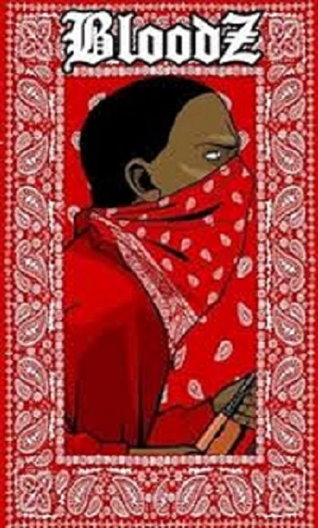

Bloods

Pride Gang (Pride) (англ. bloods — прайд/гордость). Опознавательный цвет банды — кроваво красный. Pride Gang — Альянс афроамериканских уличных группировок Южного централа (Комптона, Инглвуда), а также пригородов Лос-Анджелеса, существующий с 1972-го года, произошедший в результате собрания лидеров банд, недовольных нападениями со стороны Crips в единую «Семью», собрание было организовано бандой Piru Street Boys. В 1971-м году Crips, мощная банда, контролировавшая более половины бандитских районов в Комптоне и примерно треть в Инглвуде, начала войну с другими афроамериканскими бандами из пригородов Лос-Анджелеса, самыми крупными из которых являлись L.A. Brims, Bishops и Athens Park Boys . Крупная чёрная банда Piru Street Boys (Также Pirus) фактически до 1972-го года была частью Crips и называлась Piru Street Crips. Летом 1972-го года между Pirus и другими группировками Crips началась вражда. Банда Pirus, как и другие группировки в пригородах Лос-Анджелеса, не могла конкурировать с бандой Crips, значительно превосходившей их по численности, вооружению, да и вообще территориально. И поэтому осенью Pirus организовали встречу, на которую были приглашены все банды, подвергавшиеся нападениям со стороны Crips. На этой встрече обсуждался вопрос о создании нового альянса, который мог бы противостоять Crips. В качестве опознавательного цвета союзников был выбран красный, отсюда и их название — Bloods (англ. bloods — кровавые, красные). Позже многие другие банды, враждовавшие с Crips, присоединялись к альянсу Bloods. Отдельные группировки конфедерации , называются сетами или треями. Несмотря на то, что в коалицию входят только афроамериканские банды, отдельные сеты состоят как частично, так и полностью из латиноамериканцев, азиатов и белых. Белых также можно встретить и в основном составе банды. Так же, как и Crips, коалиция Bloods имеет свой сленг и свой алфавит (Английский алфавит с видоизменёнными символами). Используя эти символы, члены банды отмечают свою территорию с помощью аэрозольной краски, оставляя теги. На сленге Bloods название банды Crips звучит как Crabs, а сами Bloods называют себя Crab Killaz, или просто CK’z. Также в среде банды появился танец B-Walk, (Blood-Walk), являющийся аналогом C-Walk (Crip-Walk) у банды Crips. Отличие B-Walk’а — изменённые движения ногами и движения руками, практически отсутствующие в C-Walk’е. B основном Bloods занимаются торговлей наркотиками, грабежами и убийствами. После того, как в 2004 году банда Piru Street Boys из-за внутренних разногласий вышла из коалиции, было принято соглашение о перемирии между Bloods и Crips, но его можно считать формальным.